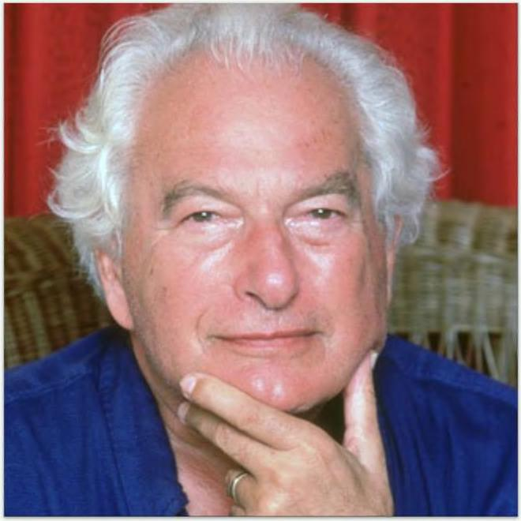

Joseph Heller Đối với một thành phần quan trọng của xã hội chúng ta, nhiều người giàu nhất và quyền lực nhất trong số chúng ta, ngày nay dường như không có giới hạn về những gì đòi hỏi. Hãy để tôi đưa ra hai ví dụ về sự nguy hiểm của việc không thấy đủ và những gì chúng có thể dạy ta. Rajat Gupta sinh ra ở Kolkata và mồ côi khi còn là một thiếu niên. Mọi người nói về số ít đặc quyền bắt đầu cuộc đời từ thế giới thứ ba. Gupta thậm chí không có tiển vào sân xem bóng chày. Những gì ông đạt được từ những ngày đầu đó chỉ đơn giản là một hiện tượng. Vào giữa những năm 40 tuổi, 6upta đã là Giám đốc điều hành của McKinsey, công ty tư vấn uy tín nhất thế giới. Ông nghỉ hưu vào năm 2007 để đảm nhận các vai trò với Liên hợp quốc và Diễn đàn Kinh tế Thế giới. Ông đã hợp tác làm từ thiện với Bill 6ates. Ông đã ngồi trong hội đồng quản trị của năm công ty đại chúng. Từ khu ổ chuột ở Kolkata, Gupta đã thực sự trở thành một trong những doanh nhân thành đạt nhất còn sống.
